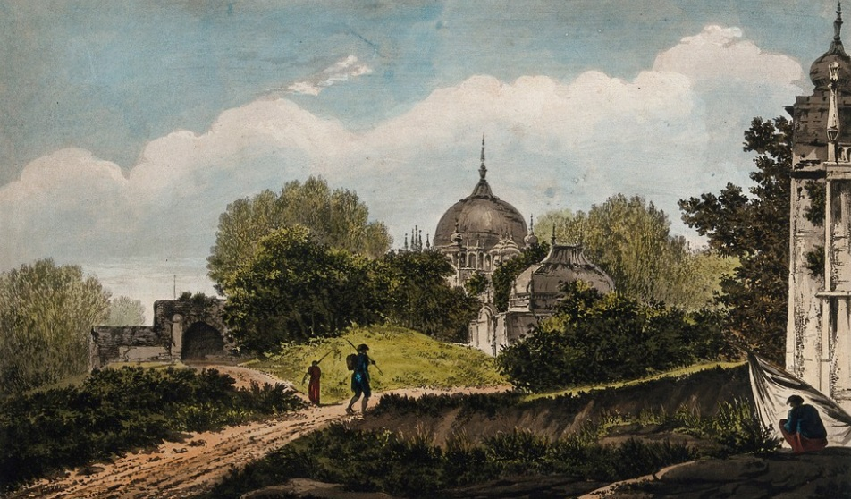

- Freedom Struggle-
In the history of Indian National movement the significant role was played by the people of Ghazipur. In home rule, Rolat Act , Khalafat Movment , Namak Kanoon, Videshi Bastro Ka Bahiskar Satyagrah & movement of 1942 the people of Ghazipur took part couragously & fearlessly to our pride.
People namely Dr. Mukhtar Ahmad Ansari, Sahjanand Sarwasti, Dr. Sayad Mahmood Qazi, Nijamul Haq Anasri, Bhagawat Mishra, Gajanan Marwari, Vishwanath Sharma, Hari Prasad Singh, Vaseer, Ram Murat Singh , Ram Raj Singh, Bola Singh, Indradev Tripathi, Dev Karan Singh, Vishwnath Ji, Sideshawar
Prasad Singh, Ram Sawaroop Pandey, Saraju Pandey, Dalsingar Dube, Ram Bahadur Shastri & other many others recorded their prideful roles. People of this district played indeliable roles in QUIT INDIA MOVEMENT. Under the leadership of Dr. Shiv Pujan Rai a group of freedom fighters hoisted the
tri-colour flag at Muhammadabad tehsil. Dr. Shiv Pujan Rai, Vans Narain Rai, Ram Badan Rai , Raj Narain Rai & Vasishth Narain Rai sacrified their lives for country on 18 Aug’1942.
After Independence, Ghazipur could not develop as it used to be in the past. But this soil gave brave soldiers like Brig. Usman, Paramveer Chakra awarddee Veer Abdul Hameed, Ram Urgrah Pandey. In recent times Ghazipur showed its notable bravery in Kargil victory against Pakistan in 1999.
- Ancient Period-
The word Ghazipur does not figure as such in ancient Indian History, but according to some historians Raja Ghadhi father of Maharsi Jamdagni was from this place. During that period this place was covered with dense forests and in it many Ashrams were situated viz. Yamdagni (father of Parasuram)
Ashram, Parsuram Ashram, Madan Van etc. The Maharshi Gautam’s Ashram was near Ghazipur town some 16 Kms. east around the village Gauspur. Sarnath, where Lord Buddha got Bodhisatva or enlightenment in 6th century B.C is about 65 km. west from this district headquarter & falls in Varanasi district.
Thus it became a center of Budha’s preachings during his time.This town was an important centre during Buddhist period. The Chinese traveller Hiuen Tsang mentions this locality as “Chanchu” meaning the soil of battlefields which is signified by many important battles fought here.